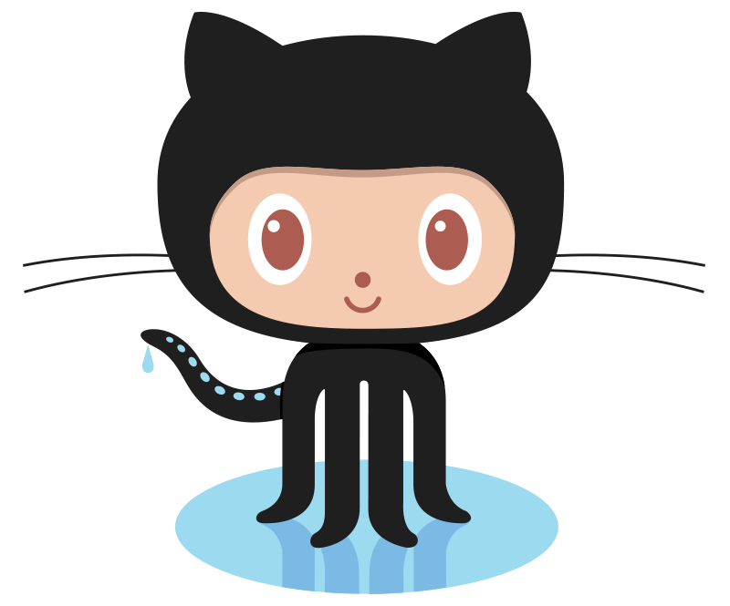
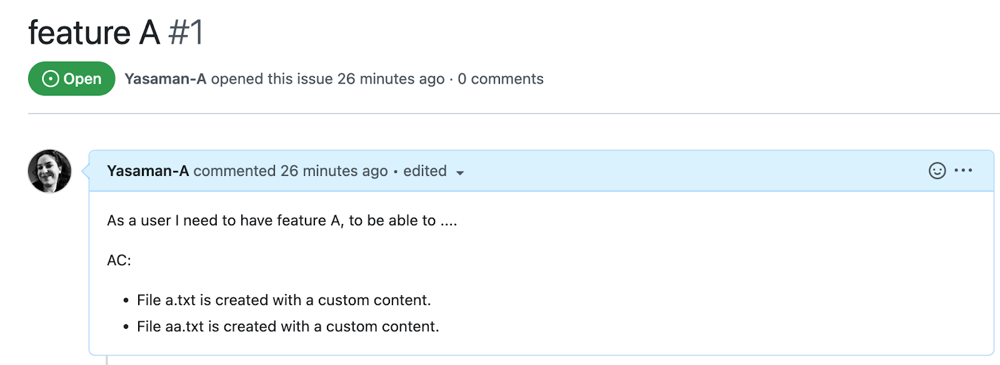
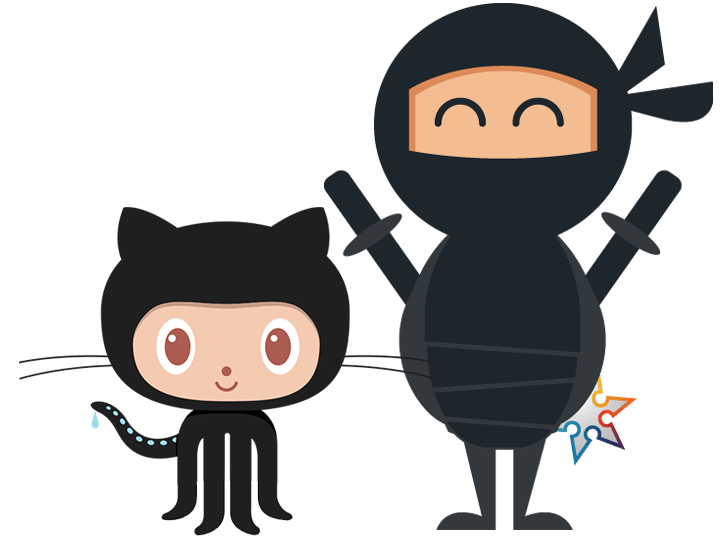
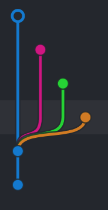

In this activity, you will work with some git commands and see how they can affect the git history. More specifically, you will practice integrating changes in a pull request into your main branch using three methods of merging, squash and merging, and rebasing.
Collaboration format - You should work in groups of 3. One submission with the name of all members is required. If for any reason you are unable to work in a group, you must do all the steps by yourself. This will require you to create three repositories and integrate changes with three different ways of merging, squash and rebasing.



